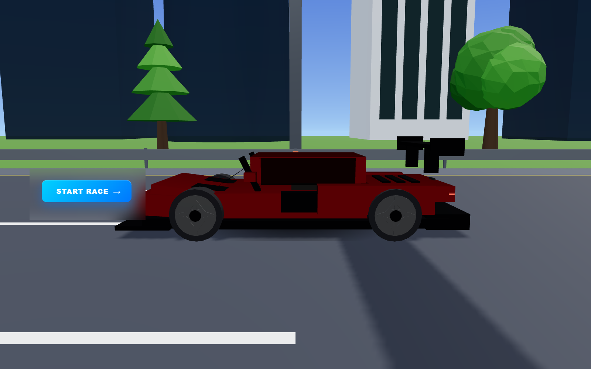
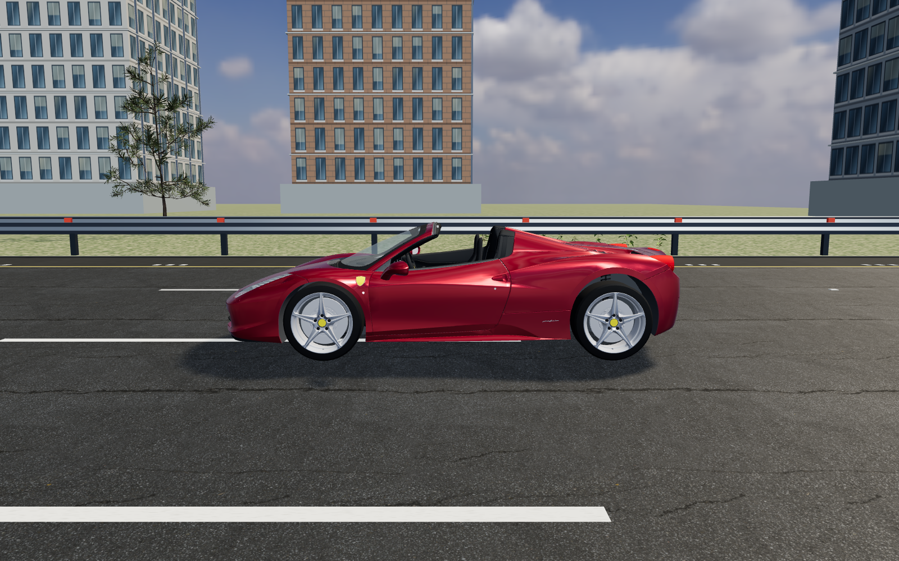
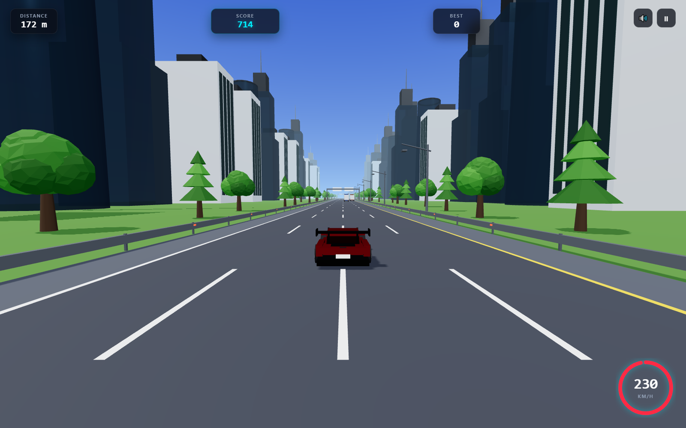
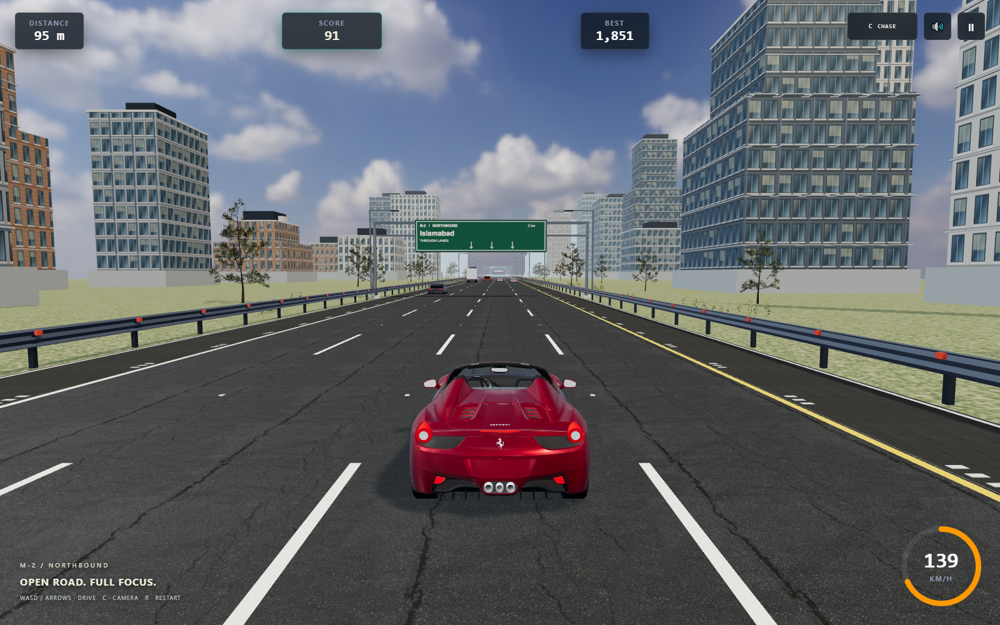
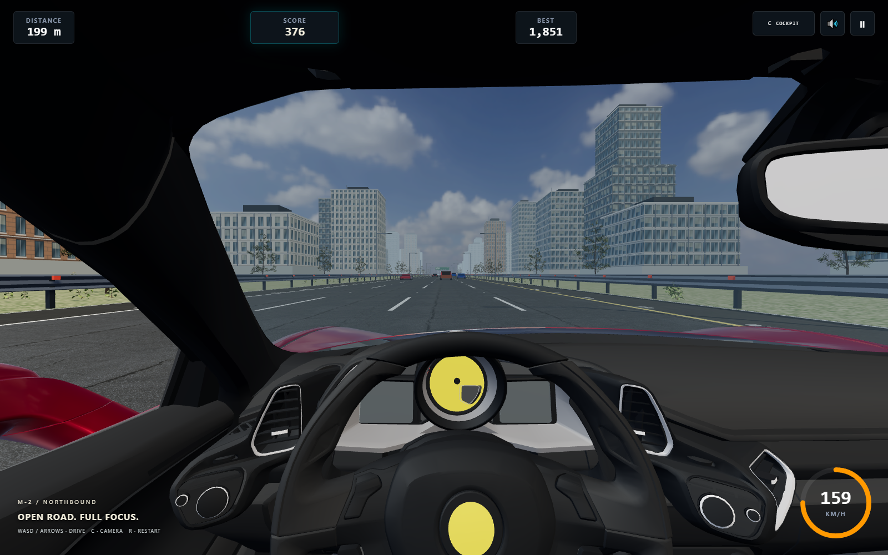
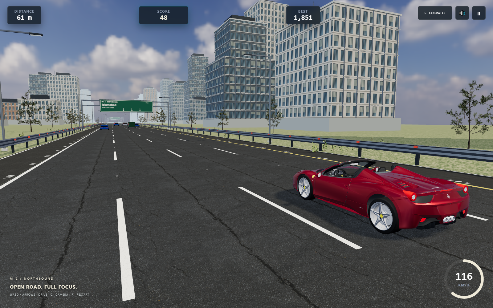
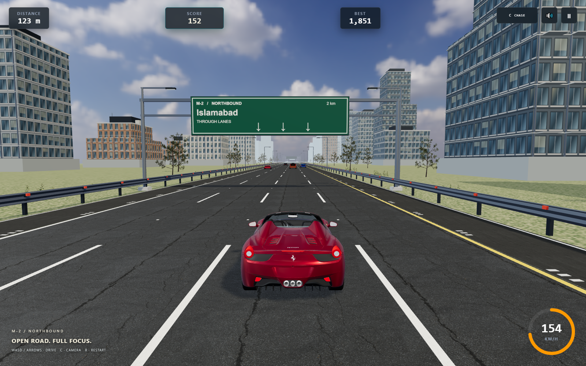
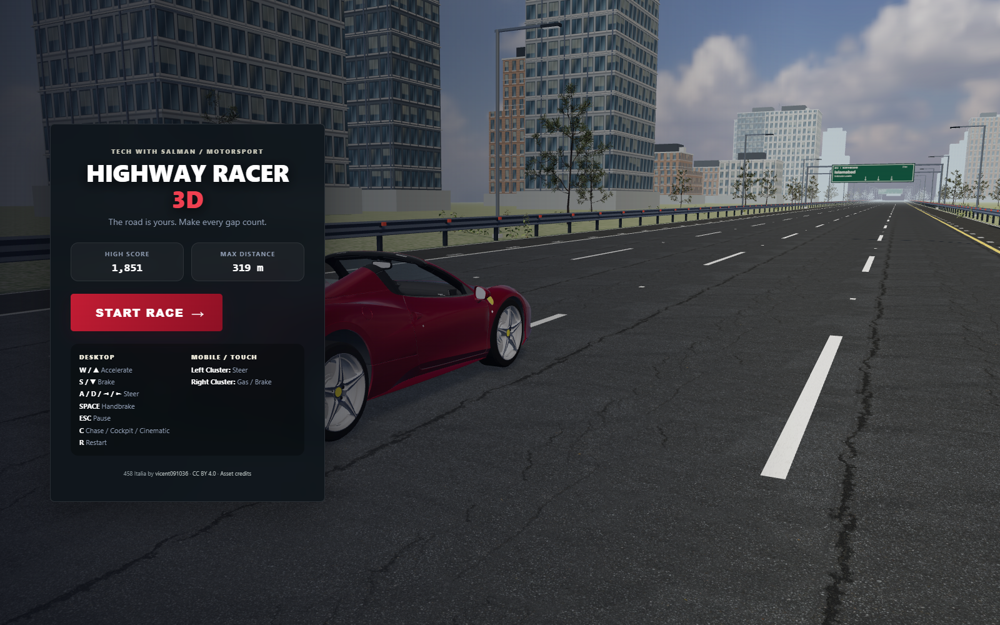
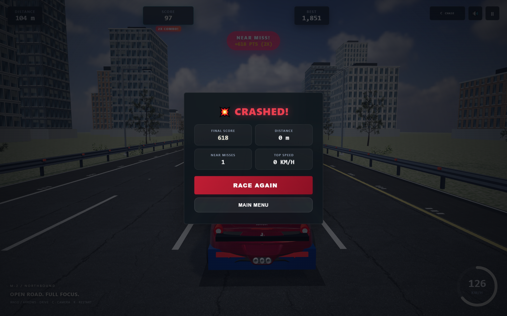

TECH WITH SALMAN / DEVELOPMENT REVIEW / 28 OCT 2026
Highway Racer 3D
A detailed imported sports car, textured highway and three working camera modes. Actual screenshots from local Chrome. No concept renders.
29 / 29CHROME REGRESSION CHECKS
59.93 FPS4 SEC · 1600 × 1000 · GTX 1060
3WORKING CAMERA MODES
Development only. No commit, push or deployment. The baseline includes the checkout's pre-existing development changes.
Player car / side profile

Original procedural geometry. In-engine side camera.
Licensed Ferrari GLB, original detailed wheels, cabin and bodywork. In-engine side camera.Rear chase / driving

Flat road and geometric scenery.
Actual driving: textured asphalt, textured vegetation, facade detail and moving traffic.Genuine cockpit / cinematic tracking

Driver eye inside the imported model. Cabin gauges and mirrors are static; HUD speed is live.
Cinematic driving view. The camera checks nearby traffic to avoid a blocked boom.Daytime highway / moving AI

Real gameplay. AI vehicle types retain their simpler procedural models.
Mobile controls / Chrome touch emulation
Menu and collision

Car showcase and bundled asset attribution.
Controlled collision fixture using the actual collision and high-score systems.